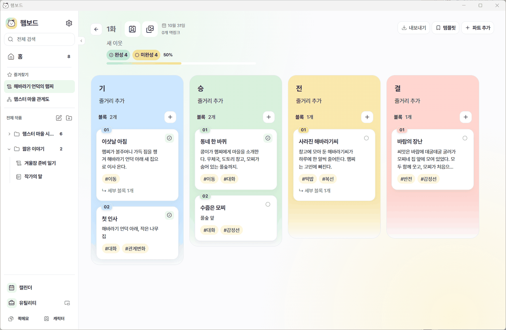
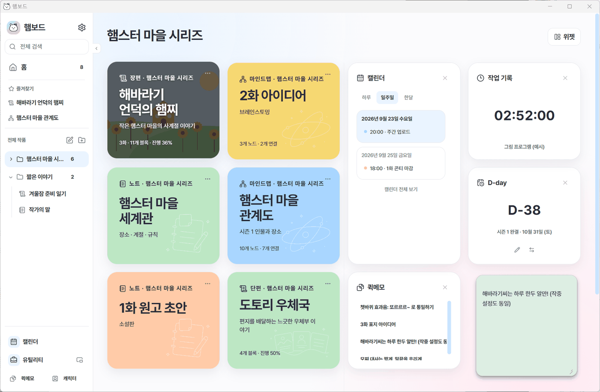
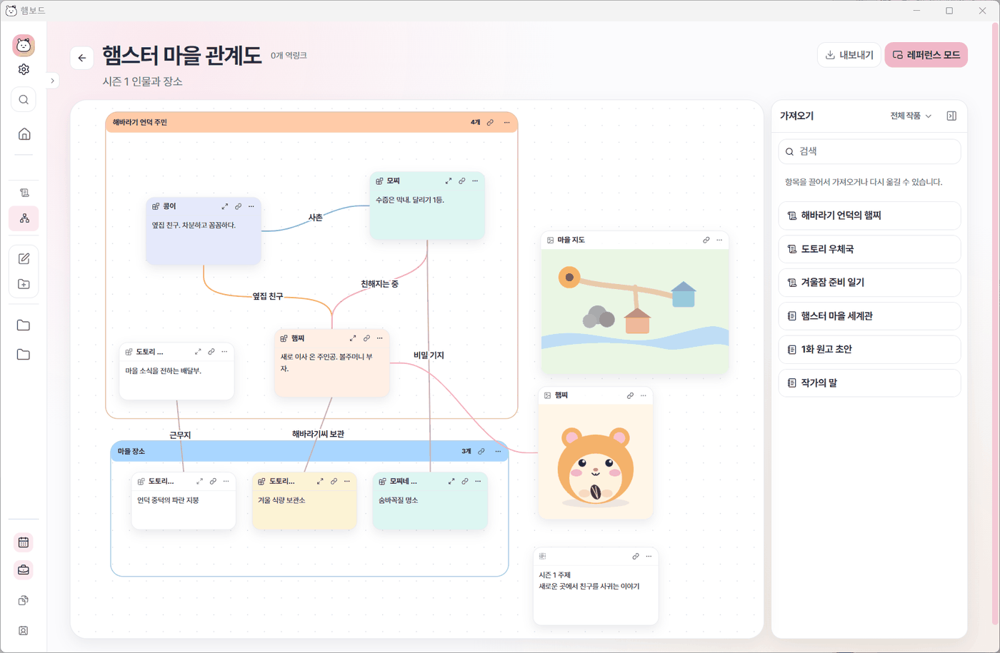
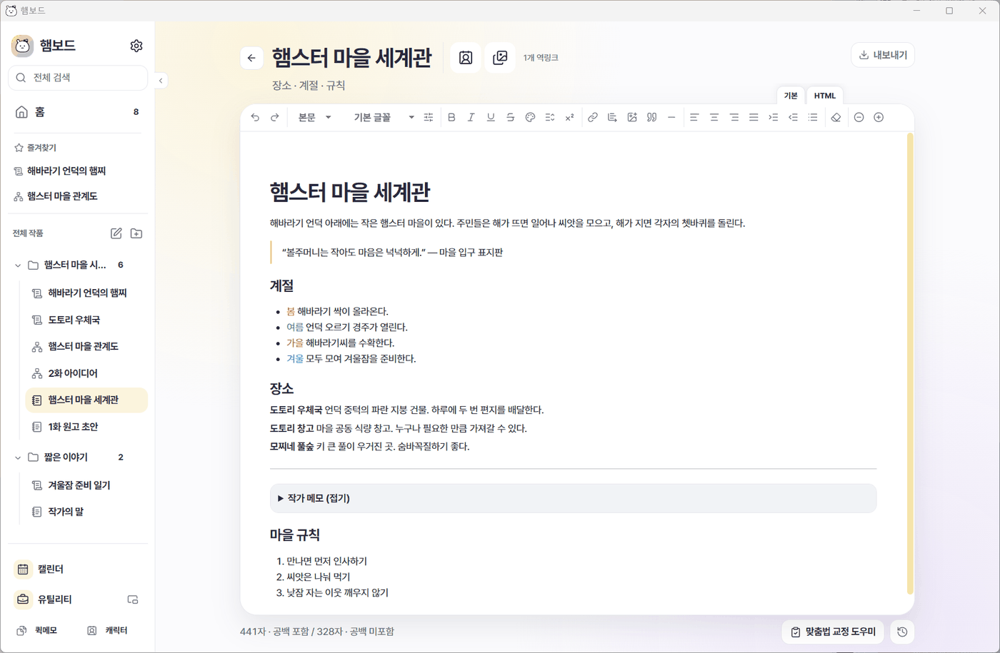
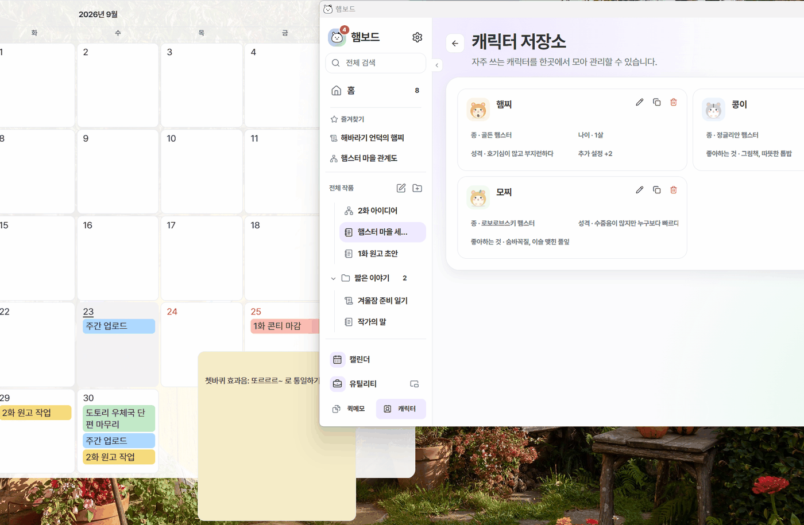
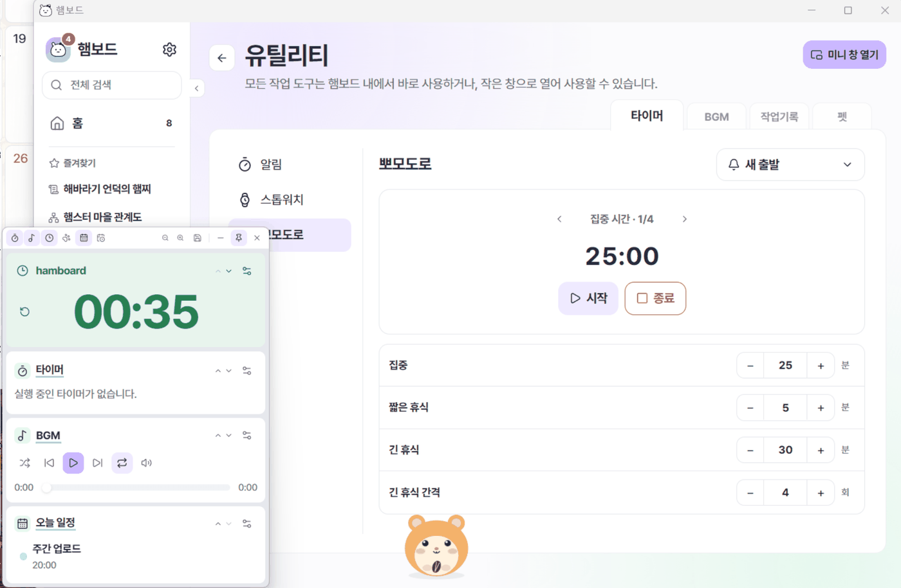

작품
파트로 큰 흐름을 나누고, 블록에 장면을 정리하여 쌓아 갑니다. 줄거리가 한 눈에 보입니다.


파트로 큰 흐름을 나누고, 블록에 장면을 정리하여 쌓아 갑니다. 줄거리가 한 눈에 보입니다.

인물 관계와 사건 흐름을 자유롭게 펼쳐놓거나, 레퍼런스 보드로 쓸 수 있습니다.

소설 원고나 설정 같은 줄글을 씁니다. 글을 쓸 때 필요한 서식을 모두 갖췄습니다.

일정을 자유롭게 편집해보세요. 작품과 연결도 가능하고, 바탕화면 위젯으로 사용할 수도 있습니다.
빈 곳을 우클릭해 바로 메모하고, 화면에 붙여 둡니다. 바탕화면 위젯으로 사용할 수도 있습니다.
여러 작품에 나오는 캐릭터를 한곳에서 관리합니다.

타이머, BGM, 작업 기록, 오늘 일정 등 필요한 유틸리티만 모아 띄워둘 수 있습니다.

뽀모도로, 스톱워치, 반복 알림
작업용 음악과 사운드
그림·글 프로그램 사용 시간 자동 기록
바탕화면을 돌아다니는 캐릭터
[[ ]] 링크문서끼리 자유롭게 연결할 수 있습니다.
태그를 사용해 같은 태그끼리 모아 봅니다.
두 문서를 나란히 열어 동시에 편집합니다.
최근 문서와 위젯을 홈 화면에서 한번에 확인합니다.
각종 문서를 다양한 방식으로 내보낼 수 있습니다.
열 가지 색 조합과 다크 모드, 접근성 고대비 모드까지.
작성한 데이터는 기본적으로 자신의 PC에 저장됩니다.
구글로 연결해 백업하고 여러 PC와 모바일 환경에서 동기화합니다.

햄보드는 혼자 조금씩 만들어가고 있는 앱입니다.
불편한 점이나 원하는 기능이 있다면 의견을 남겨주세요.